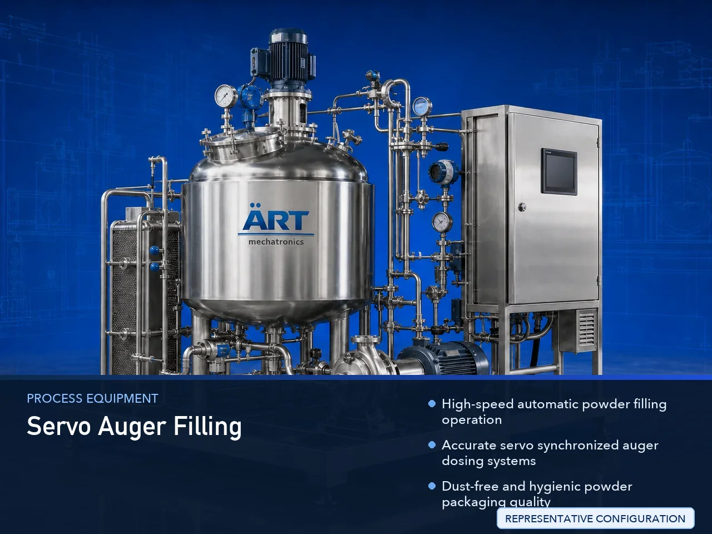

Servo Auger Filling Machine for Cans & Jars (Automatic Powder Filling System)
A Servo Auger Filling Machine for Cans & Jars, also known as an Auger Powder Filling Machine, Servo Powder Filling Machine, Container Powder Filling Machine, or Automatic Auger Dosing System, is an advanced industrial packaging solution designed for automatic container feeding, precision powder…

About the Servo Auger Filling
Servo auger filling systems are widely used for: ✔ Spice powder filling ✔ Milk powder can filling ✔ Protein powder jar packaging ✔ Coffee powder container filling ✔ Tea powder packaging ✔ Nutraceutical powder filling ✔ Chemical powder packaging ✔ Fine powder dosing operations
The machine improves: ✔ Filling accuracy ✔ Powder dispensing consistency ✔ Product hygiene ✔ Packaging speed ✔ Production efficiency ✔ Dust-free filling quality ✔ Retail packaging appearance
Industrial servo auger filling machines use: ✔ Servo synchronized auger systems ✔ Automatic container feeding systems ✔ PLC and HMI automation controls ✔ Precision screw dosing mechanisms ✔ Load cell weighing integration
to automatically fill powders into cans and jars with superior dosing accuracy and high production efficiency.
Servo auger filling machines for cans and jars are widely used in industries such as:
Food processing industries Spice industries Tea industries Coffee industries Nutraceutical industries Pharmaceutical industries Chemical industries FMCG industries
where accurate powder dosing, hygienic packaging, and dust-controlled filling operations are essential.
The machine is highly suitable for: ✔ Spice powder jar filling ✔ Protein powder can packaging ✔ Coffee powder filling ✔ Tea powder packaging ✔ Milk powder container filling ✔ Nutraceutical powder packaging
ART Mechatronics offers high-performance servo auger filling machines for cans & jars, engineered for continuous industrial operation, accurate powder filling performance, hygienic packaging quality, and reliable long-term packaging automation.
Working Principle of Servo Auger Filling Machine
- 1. Empty Container Feeding Empty cans or jars are automatically fed into filling section through synchronized conveyor systems.
- 2. Powder Dosing Process Machine automatically dispenses powder using servo synchronized auger screw filling systems.
Servo automation ensures accurate dosing and smooth powder handling.
- 3. Powder Filling Operation Machine handles: ✔ Spice powders ✔ Milk powder ✔ Protein powder ✔ Coffee powder ✔ Tea powder ✔ Nutraceutical powders ✔ Chemical powders
accurately and continuously.
- 4. Dust Control & Filling Stabilization Machine performs: Dust-controlled filling Accurate powder settling Vibration-assisted filling Leak-free powder dispensing
for hygienic and clean packaging quality.
- 5. Coding & Inspection Integration Optional systems include: Batch coding Date printing QR code printing Check weighing Vision inspection systems
- 6. Finished Container Discharge Filled containers discharged automatically for: Sealing operations Cartoning Case packing Retail distribution
Types of Servo Auger Filling Machines
- 1. Single Head Servo Auger Filling Machine Designed for: ✔ Medium-speed powder filling applications
- 2. Multi Head Auger Filling Machine Suitable for: ✔ High-speed industrial powder packaging systems
- 3. Can Powder Filling Machine Uses: ✔ Metal and tin container powder packaging systems
- 4. Jar Powder Filling Machine Designed for: ✔ Glass and PET jar powder packaging systems
- 5. Servo Driven Precision Filling Machine Suitable for: ✔ Precision high-accuracy powder dosing operations
- 6. Fully Automatic Powder Filling System Designed for: ✔ Complete industrial powder packaging automation lines
Industries Using Servo Auger Filling Machines
🌶️ Spice Industry Masala powders, seasoning powders, and spice container filling systems. 🥛 Dairy Industry Milk powder, whey powder, and dairy ingredient packaging systems. 💪 Nutraceutical Industry Protein powder, supplements, and health nutrition packaging systems. ☕ Tea & Coffee Industry Coffee powder, tea powder, and beverage ingredient packaging systems. ⚗️ Chemical Industry Chemical powders, pigments, and industrial fine powder filling systems. 🛒 FMCG Industry Consumer product powder packaging and premium retail container filling systems.
Features & Advantages
✔ High-speed automatic powder filling operation ✔ Accurate servo synchronized auger dosing systems ✔ Dust-free and hygienic powder packaging quality ✔ PLC and servo automation control systems ✔ Improves filling accuracy and product consistency ✔ Reduces product wastage and labor dependency ✔ Supports multiple container sizes and powder types ✔ Reliable long-term industrial performance ✔ Smooth and continuous packaging operation
Technical Highlights
Machine Type: Automatic servo auger filling machine Industrial powder filling system Container powder packaging machine Packaging Material: Tin cans Glass jars PET jars Plastic powder containers Filling Integration: Servo auger screw systems Load cell weighing systems Precision powder dosing systems Features: PLC control system Servo synchronization Touchscreen HMI Dust collection integration Automatic container handling Applications: Spice powders Milk powder Protein powder Coffee powder Tea powder Chemical powders Automation: Semi-automatic Fully automatic industrial systems
Turnkey Servo Auger Filling Solutions
ART Mechatronics offers: Complete powder filling systems Automatic auger dosing solutions Packaging automation integration systems Conveyor synchronization systems Installation & commissioning After-sales service & AMC
Why Choose Art Mechatronics
Expertise in industrial packaging and automation systems Customized powder filling solutions for multiple industries High-performance and accurate auger dosing technology Advanced PLC and servo automation systems Proven industrial packaging performance across sectors
Applications
Spice Processing Industries Milk Powder Manufacturing Plants Protein Supplement Industries Tea & Coffee Packaging Units Chemical Industries FMCG Packaging Plants
Related Process Equipment machines
Get pricing & specs for the Servo Auger Filling
Share the product, target capacity, current process and plant location. These details help our engineers discuss the right machine or line configuration.
One partner, from design to start-up
ART Mechatronics designs, manufactures, installs and commissions your Servo Auger Filling solution with regional presence in India, UAE and Thailand.